Semana 5: Impresion 3D
Proyecto de ingeniería
Hacer un boceto con una pieza que no pueda ser fabricada por medios extractivos, modelar la pieza en Solidworks e imprimir la pieza para la siguiente semana
Decidí hacer al personaje del "caballero" del videojuego "Hollow Knight", pero para que pudiera aplicar a los requisitos de ser fabricado por medios extractivos, a las extremidades les otorgué articulaciones para que tuvieran movilidad
-
Pasos
-
1.- El primer paso que realicé para hacer el modelado de mi figura fue buscar una imagen del personaje y la puse a escala en Solidworks
-
2.- Una vez colocada la imagen, calqué la cabeza y la extruí, para la parte del centro fue con la opción de revolución y los cuernos fue con extrusión normal y luego se redondearon
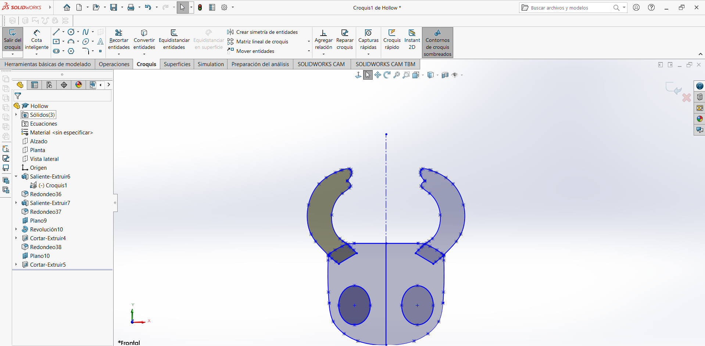
Para finalizar con la cabeza en la parte posterior se extruyó el corte para poder unir la cabeza con el cuerpo, además de un hoyo en la parte inferior para poder unirlo con el cuerpo
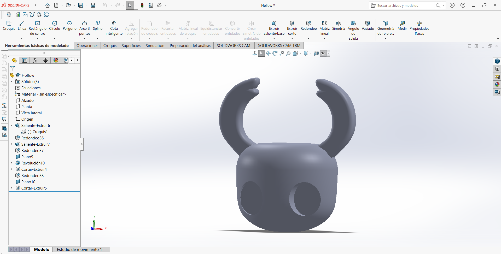
- 3.- Para la parte del cuerpo se hicieron 2 círculos, uno en cada plano de manera vertical y se usó Recubrir para hacer un cono, después el redondeo, porque el cuerpo es redondo, no hay muchas partes planas
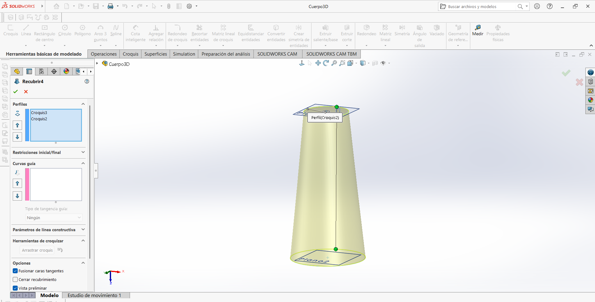
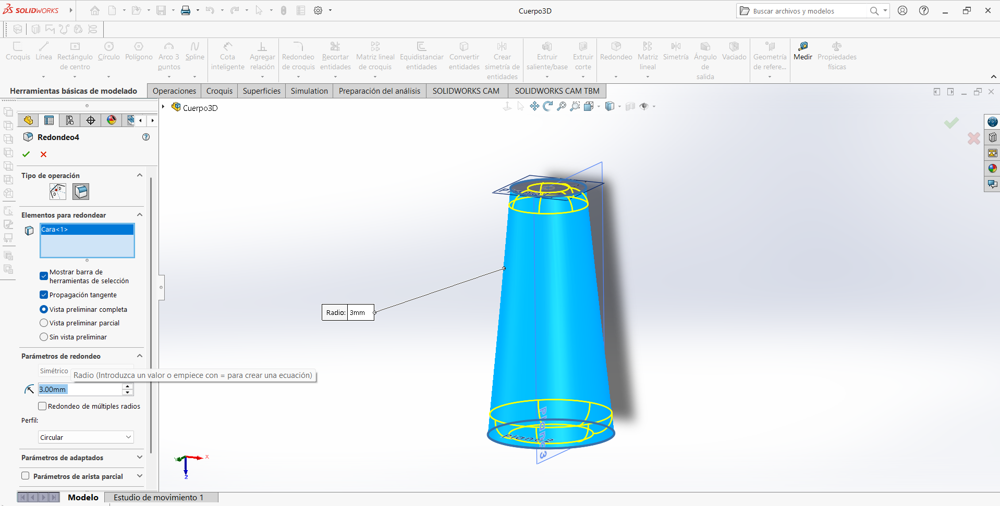
Después se extruyó desde la parte superior un círculo para poder introducirlo en la cabeza y en la capa
Además de que con la herramienta de Saliente por barrido se hicier las partes de "cadenas" para formar las articulaciones, se hicieron para las 2 piernas y un solo brazo
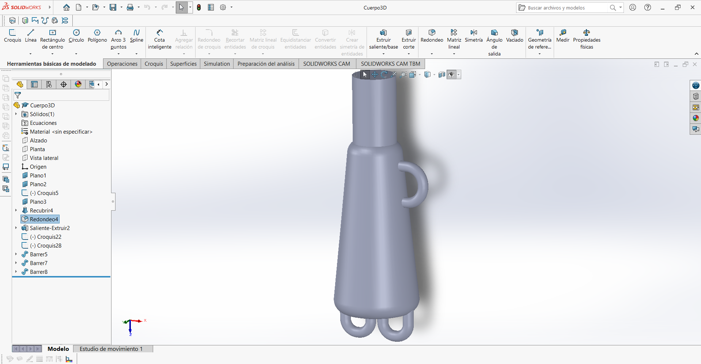
- 4.- Ahora para la capa se extruyó un círculo con un agujero en el centro para ser introducido en la saliente del cuerpo
Para la parte de la forma de la capa, en un plano horizontal tracé son Spline la forma cerrandola con el círculo que se extruyó anteriormente, y esa forma la extruí con la opción de Revolución pero no por completo para dejar un espacio para el brazo
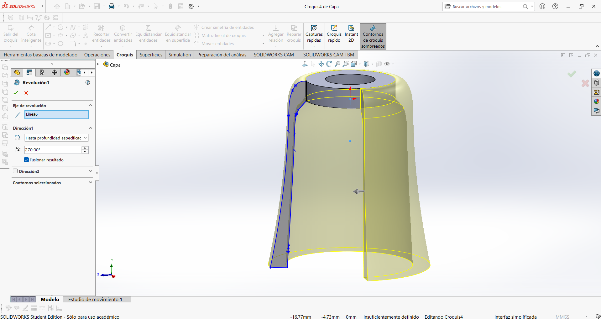
Para el patrón de la parte inferior se creó un plano con respecto a la vista lateral y se pusieron varios circulos pegados unos a otros y se cortaron a la mitad. Ya al final solo se extruyó el corte por toda la figura
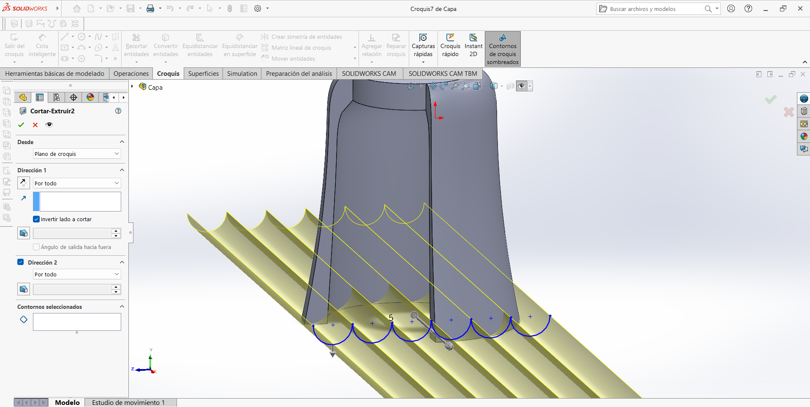
Y así quedó:
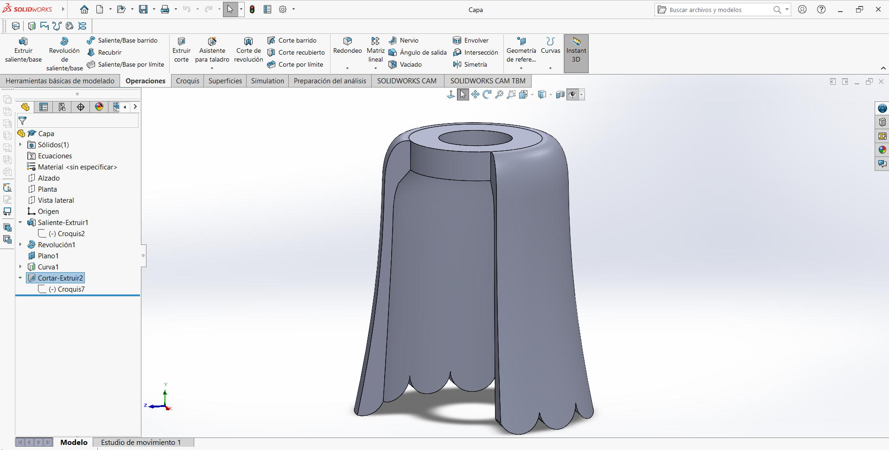
- 5.- Para poder hacer el brazo se hizo algo parecido que a la cabeza, primero se marcó la mitad del brazo con spline y por en medio un eje de construcción para cerrar la figura y se utilzó la opción de "Revolución"
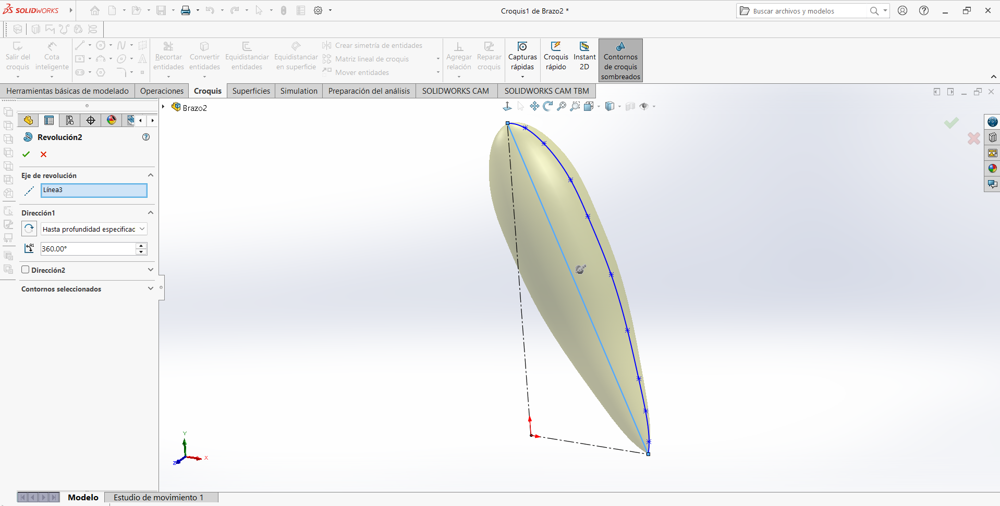
Para poder hacer la articulación nuevamente se hizo un croquis marcando el camino que sigue la articulación y después se usó "Saliente por barrido"
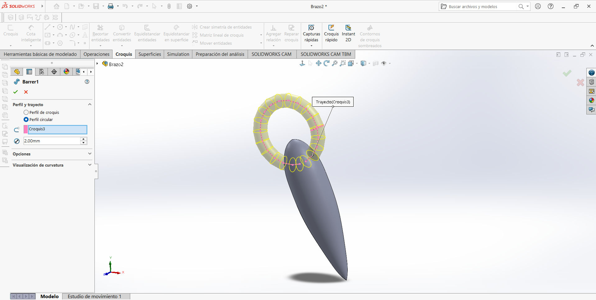
Ya por último con un plano es extruyó un corte en forma de circulo para colocar la espada
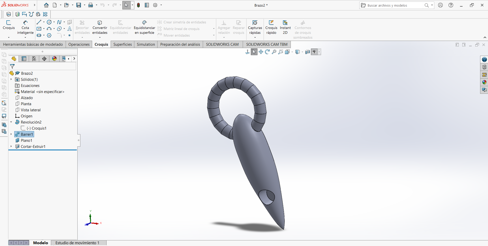
-
6.- Para hacer la pierna se hicieron 2 piezas principalmente:
-
Una parte que se unía con el cuerpo y tenía una ligera forma de cadena para poder añadir otra nuevamente en la parte inferior y alargar la pierna. Se utilizó nuevamente Saliente por barrido para hacer las articulaciones
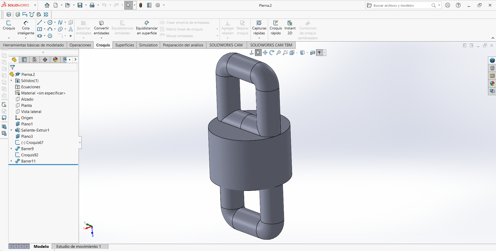
- Para la última parte se hizo una forma de cono porque las piernas del personaje terminan en punta y no son simplemente formas de cilindro
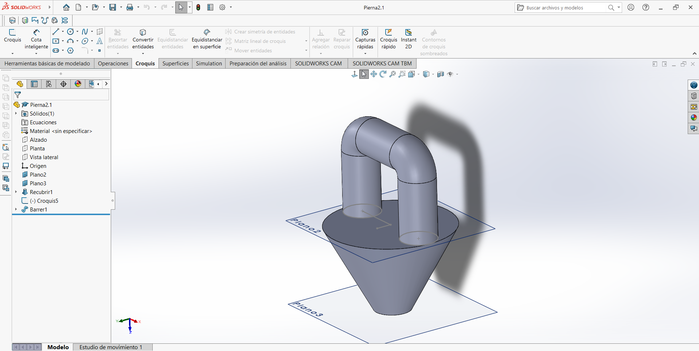
- 7.- Finalmente para la ultima pieza necesaria para armar al personaje es la espada
Para esta pieza nuevamente se utilizó la herramienta de "Recubrir", pero en este caso fuente entre la forma de un diamante y un circulo para recrear la forma de la espada.
Ya por último se extruyó un círculo por la parte de abajo para generar el mango de la espada
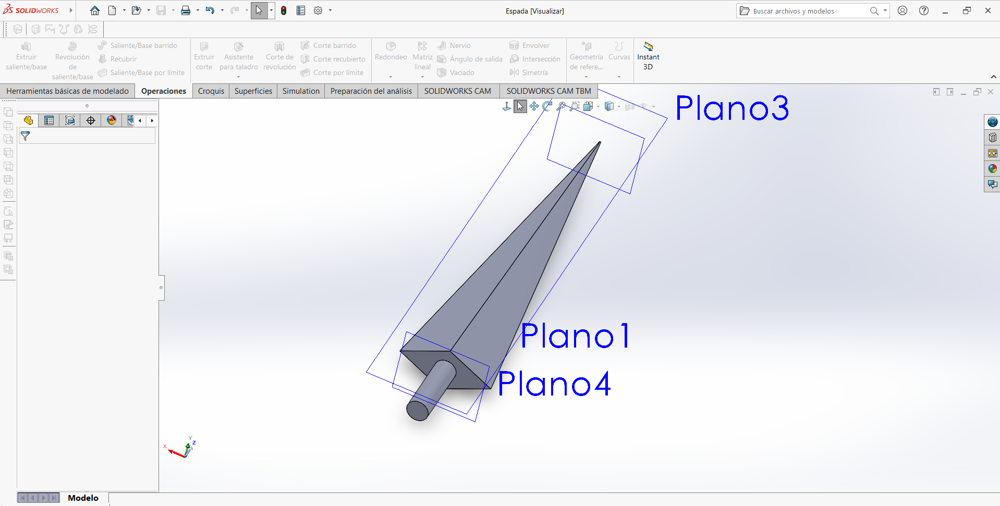
- 8.- Todas las piezas se ensamblaron en la misma aplicación de Solidworks y simplemente con el software de Ultimaker Cura generamos el gcode para usar la impresora 3D
Y así fue cómo quedó la impresión:
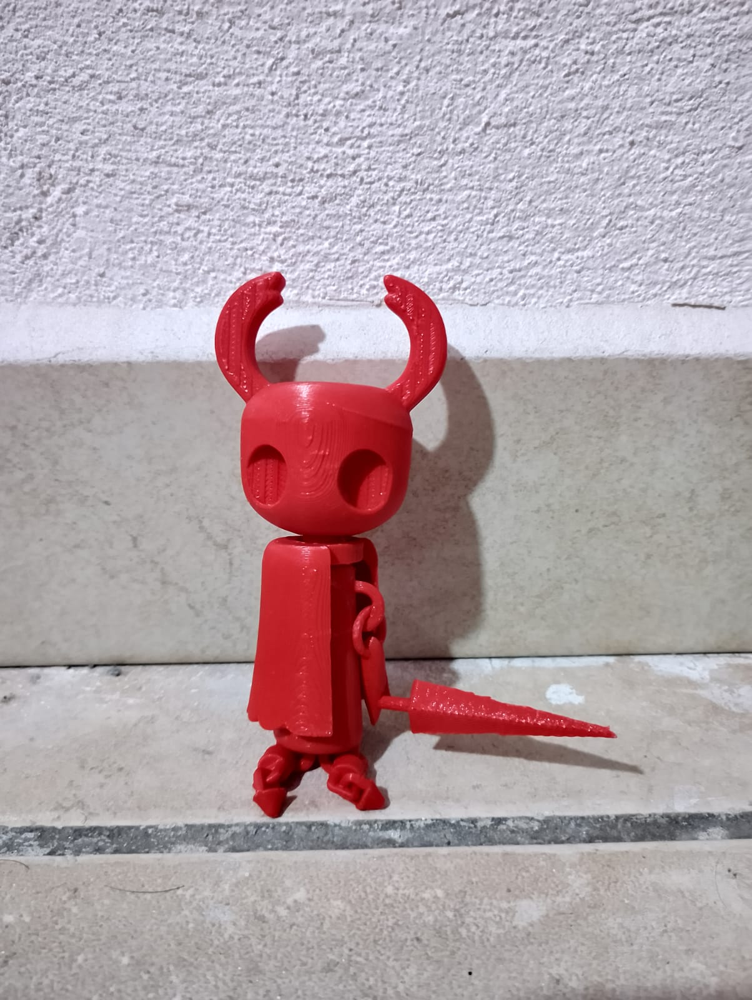